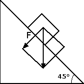

Equilibrio nei fluidi
Introduzione della grandezza pressione
Finora abbiamo sempre applicato le forze ad un unico punto, in generale coincidente con il baricentro, ossia con il punto nel quale possiamo pensare concentrata tutta la massa del corpo. Quando però abbiamo a che fare con corpi estesi omogenei la forza-peso è distribuita in maniera uniforme e l'estensione della superficie d'appoggio può giocare un ruolo importante nel definire le condizioni di equilibrio.
Partiamo ad esempio dalla seguente domanda: perché uno sciatore sprofonda nella neve se indossa solamente gli scarponi mentre invece non sprofonda con le racchette da neve o gli sci? È chiaro che in entrambi i casi la forza-peso dello sciatore è la stessa. La differenza sta nel fatto che, nel caso delle racchette o degli sci, la forza-peso dello sciatore viene distribuita su tutta la superficie d'appoggio delle racchette o degli sci e questa superficie ha un'area molto più grande di quella degli scarponi.
La grandezza che quantifica quanto una forza è distribuita su una superficie è detta pressione. La pressione p si definisce come il rapporto tra l'intensità della forza F che preme su una superficie e l'area A della superficie premuta: p = F / A. Nel Sistema Internazionale la forza si misura in newton, l'area in metri quadri. Pertanto, l'unità di misura della pressione è il newton su metro quadro (N / m2). Questa unità di misura prende anche il nome di pascal (simbolo Pa). Abbiamo pertanto che 1 Pa = 1 N / 1 m2.
Ad esempio, se una scatola pesa 20 N e la sua base ha un'area di 50 cm2 la sua pressione in pascal vale p = 20 N / (50 · 10-4 m2) = 4000 Pa. Dal momento che l'area della superficie A su cui è distribuita la forza compare al denominatore nella definizione di pressione p = F / A, avremo che, a parità di forza F applicata, la pressione p aumenta al diminuire dell'area A della superficie d'appoggio. Ad esempio, risultano molto elevate le pressioni esercitate dalle forze applicate sulle lame affilate dei coltelli o sulle punte dei chiodi.
Prima di passare a un esercizio, vogliamo menzionare come ci siano molte altre unità di misura che vengono comunemente usate per la pressione:- il bar: 1 bar = 105 Pa = 100 000 Pa
- il millibar: 1 mbar = 0.001 bar = 100 Pa
- l'atmosfera: 1 atm = 1.013 · 105 Pa = 1013 mbar.
Quesito: Consideriamo un corpo avente una superficie d'appoggio di area 400 cm2 e un peso di 50 N. Poniamolo su un piano inclinato di 45°. Quanto vale la pressione esercitata dal corpo?
Risposta: Prima di tutto dobbiamo trovare la componente F della forza-peso perpendicolare al piano inclinato. La forza-peso di 50 N è la diagonale di un quadrato che ha per lato la componente perpendicolare cercata.

Avremo pertanto che F = 50 N / 1.41 = 35.5 N. Questa è la forza che preme sul piano. Per trovare la pressione dobbiamo infine dividere tale forza per l'area della superficie d'appoggio espressa in metri quadri, ossia: p = 35.5 N / 0.04 m2 = 887.5 Pa.